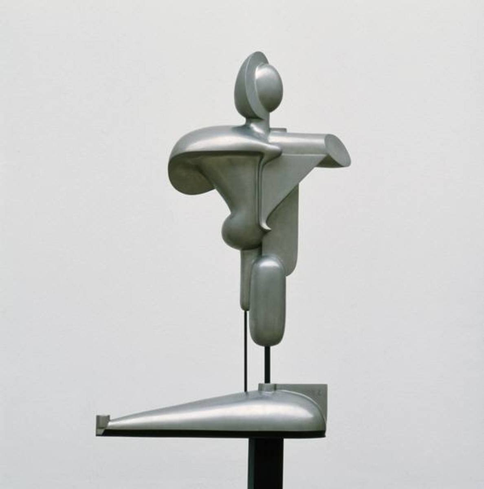

NOTIZEN
About
Kategorien
alle
(12)
cli
(1)
code
(3)
ffmpeg
(1)
flask
(1)
gvim
(1)
linux
(1)
musik
(1)
python
(1)
ubuntu
(1)
video
(1)
vim
(7)
wayland
(1)
zitat
(1)
Fontgrösse in vim zum Drucken ändern
vim
Die Fontgrösse kann zum Drucken in vim geändert werden.
25.06.2023
Manpages in Vim lesen
vim
Manpages können in vim mit
:Man foo
gelesen werden.
25.06.2023
Zeige eine Liste mit Änderungen in Vim an
vim
List of changes in vim:
17.06.2023
Unter gvim die vorhandenen Schriften anzeigen und auswählen
vim
gvim
17.06.2023
ack - grep-like text finder
cli
ack - grep-like text finder
14.06.2023
thttpd installieren und für CGI, Flask & Python Beispiele nutzen
python
flask
Eine einfache Variante um schnell einen kleinen CGI-fähigen Server zum Testen aufzusetzen.
12.06.2023
Videodateien mit ffmpeg verbinden, ohne Neucodierung
ffmpeg
video
Liste mit Dateinamen erstellen:
12.06.2023
Zitat #1
zitat
musik
»If Charlie Parker was a gunslinger, there’d be a whole lot of dead copycats.«
- Charles Mingus
10.06.2023
Tablet oder Phone als externes Display unter Ubuntu 22 nutzen
wayland
ubuntu
linux
Funktion muss mit
10.06.2023
Vim Tipp #3
vim
code
Asterisk
*
sucht Wort unter dem Cursor.
01.06.2023
Vim Tipp #1
code
vim
Vim Plugins installieren
29.05.2023

Playground
vim
code
Verschiedenes
01.01.1979
Keine Treffer